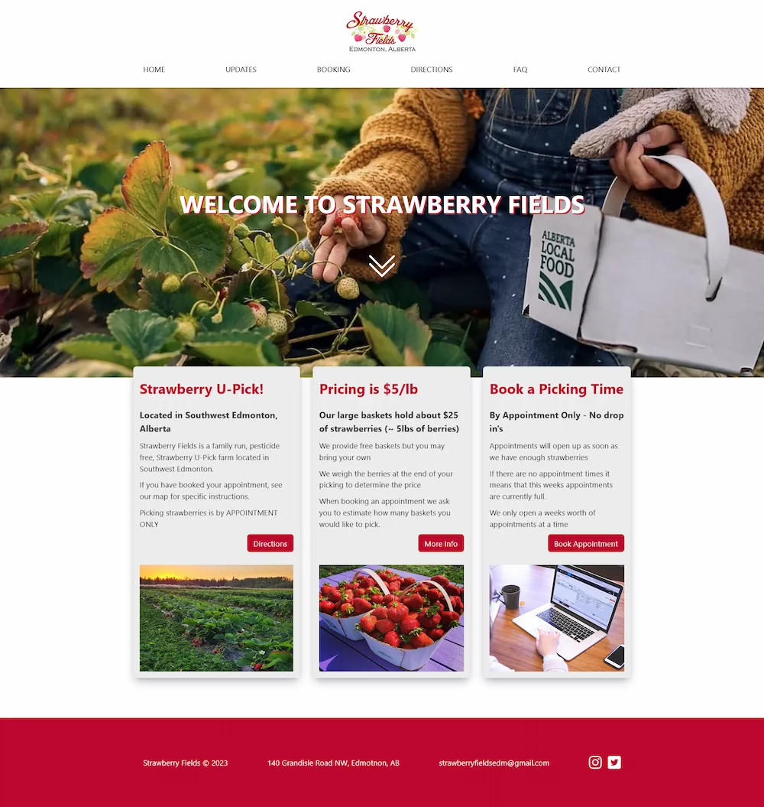
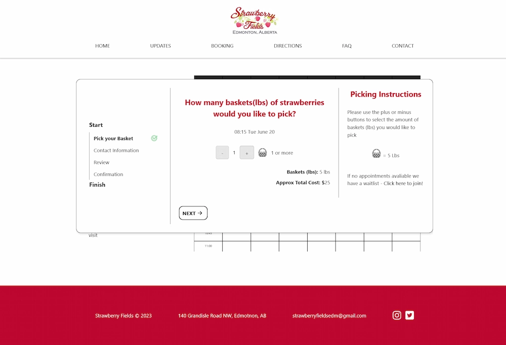
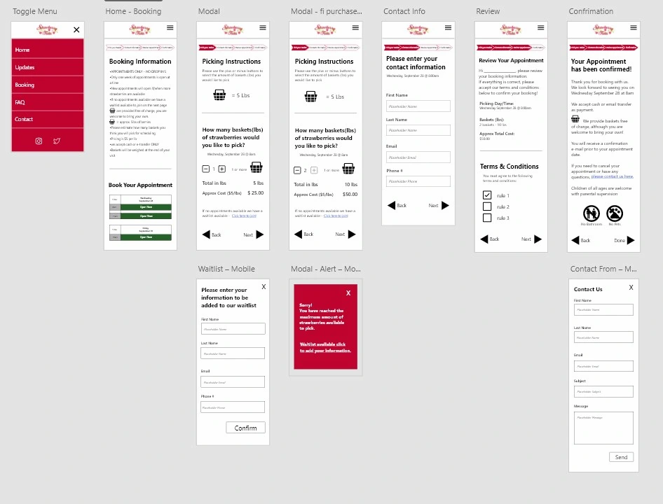

Strawberry Fields
Strawberry Fields is a local Strawberry U-pick Farm located in south Edmonton. This was my final capstone group project, we were tasked with the completion of a custom booking system and a small website redesign. Requirements to communicate with clients and team members, use client-focused decision making, and complete a design sprint. My role in the group was co-lead, communication with clients, completion of prototypes for the booking form in mobile and desktop versions, and the majority of the UX/UI design and coding. The tools and languages I used to complete this project include Adobe XD, Wordpress, HTML, CSS/SASS, PHP, jQuery, and JavaScript. This project is a major accomplishment for me and my team members.


